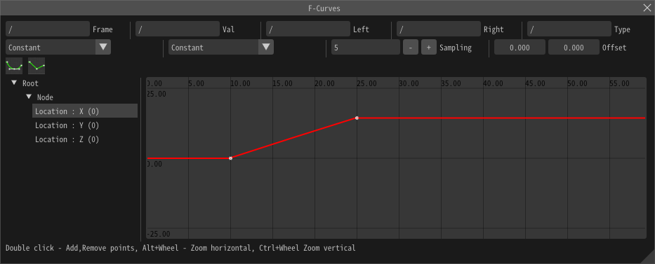

12. 用F曲线表示复杂的运动¶
概要¶
在本章中，我们使用F曲线来表示复杂的运动。我们在过去已经介绍了各种运动方式。很多情况下，这些方法就足够了。然而，有时这还不够。因此，你可以使用F曲线让它们自由变化到你需要的任何数值。
本章制作的特效
但是，本章将不制作具体的特效。上图中的特效可以用本章和之前的章节中讲解的知识制作。
F曲线¶
在Effekseer中，可以通过设置F曲线来控制一些参数，例如位置、角度、缩放、颜色等。
让我们打开F曲线窗口。
从窗口菜单中选择F曲线。 然后会出现编辑F曲线的窗口。

但是，并没有显示要编辑的F曲线。
在位置窗口中选择F曲线。
然后，F曲线的窗口的左侧就会显示一个可编辑的F曲线的标签。
左键单击标签，F曲线就会显示出来。
要向F曲线添加控制点，请双击F曲线。让我们添加两个控制点。

控制点可以通过左键单击来选择，并通过拖动控制点来移动。试着移动控制点，使其数值发生变化。

如果你播放特效，你会看到粒子是按照F曲线来移动的。
曲线可以自由控制。选择一个控制点，点击左上角的展开锚点。然后你会看到用于控制曲线的锚点。移动锚点来改变曲线。


如果选择相邻的收缩锚点，会导致数值突然变化。
要删除一个控制点，请双击它或按Delete键。
你可以将这些方法组合起来表示复杂的运动。
除了位置之外，也可以控制角度和颜色。
采样¶
Effekseer实际上使用了F曲线的近似值。因此，它可能无法应对数值的突然变化。在这种情况下，降低采样。这将使您能够应对数值的突然变化。


总结¶
本章解释了F曲线，你可以用它制作复杂的特效。